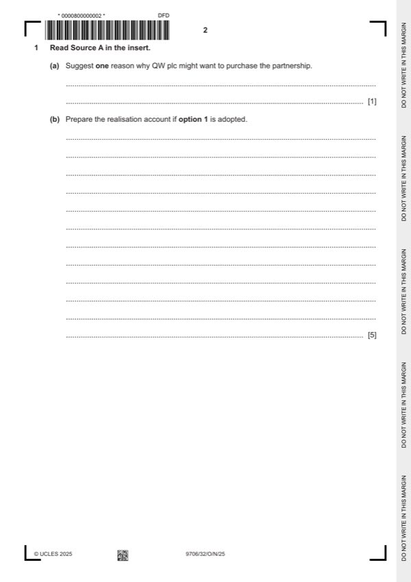
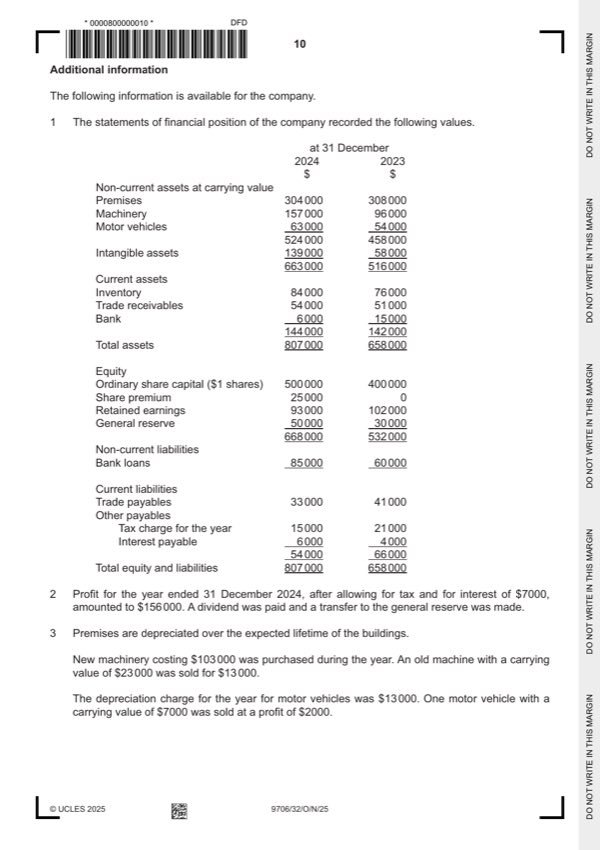

Question 1

Original paper page 2

Original paper page 10
Part 1(a) — solution
Suggest one reason why QW plc might want to purchase the partnership. 1
Economies of scale / synergy (1)
Greater geographical coverage (1)
Increased market share / more customers / more sales (1)
Diversification of markets (1)
Elimination of competitors (1)
Max 1
Accept other valid responses.
Mark points
- Include the ideas shown in the solution above.
Part 1(b) — solution
Prepare the realisation account if option 1 is adopted. 5
Realisation account
$ $
Non-current assets 51 500 * Trade payables 7 900 *(1) all three
Current assets 20 900 * Capital – Omira (motor vehicle) 12 200 }**
Bank (legal fees) 3 100 } Capital – Peter (motor vehicle) 5 200 }**(1)
Bank (redundancy pay) 20 000 }(1) QW plc – purchase 200 000 (1)
consideration
Capital – Omira (profit) 77 880 }*
Capital – Peter (profit) 51 920 }*(1)OF
225 300 225 300
University Press & Assessment 2025 Page 9 of 19
9706/32 Cambridge International AS & A Level – Mark Scheme October/November 2025
Mark points
- Include the ideas shown in the solution above.
Part 1(c) — solution
Calculate the amount of cash payable to or receivable from each partner if option 1 is adopted. 6
Omira Peter
$ $
Capital account 35 000 25 000 (1) both
Current account (2 900) 6 000 (1) both
Realisation (profit) 77 880 51 920 (1)OF both
Realisation (vehicles) (12 200) (5 200) (1) both
QW plc (Shares) (50 000) (50 000) (1) both
Cash 47 780 27 720 (1)OF both
Mark points
- Include the ideas shown in the solution above.
Part 1(d) — solution
Prepare the bank account of the partnership showing the entries to close the business if option 1 is adopted. 3
Bank account
$ $
QW plc 100 000 (1) Balance b/d 1 400
Legal fees 3 100 }
Redundancy pay 20 000 }(1)
Capital – Omira 47 780 }*
Capital – Peter 27 720 }*(1)OF
100 000 100 000
University Press & Assessment 2025 Page 10 of 19
9706/32 Cambridge International AS & A Level – Mark Scheme October/November 2025
Mark points
- Include the ideas shown in the solution above.
Part 1(e) — solution
Assess both options put forward by QW plc for the acquisition, recommending the better option for the partners. 5
Your answer should cover both financial and non-financial factors.
Financial (Max 3)
The purchase consideration / realisation profit is higher for option 1 (1).
The salaries on offer under option 1 would be attractive as they are very generous (1).
Partners might prefer to own shares as they might increase in value over time (1).
Partners might prefer to be in receipt of dividends as these might increase (1).
Partners might prefer to receive debenture interest as it is fixed / payable whether profits are made or not (1).
Non-financial (Max 3)
Staff being made redundant may adversely affect the partners’ reputation (1).
Training new staff could be stressful (1).
Option 1 provides voting rights (1).
Partners may be hoping for a quiet retirement / do not want to work for an extra year (1).
Decision supported with a reason (1)
Accept other valid responses.
University Press & Assessment 2025 Page 11 of 19
9706/32 Cambridge International AS & A Level – Mark Scheme October/November 2025
Mark points
- Include the ideas shown in the solution above.
Part 1(f) — solution
Discuss this statement made by the director. Support your answer by referring to the relevant international 5
accounting standard (IAS).
Provisions are covered in IAS 37 (1).
A provision needs to be made if there is a greater than 50% likelihood (probable) of an obligation requiring settlement (1).
The provision would be included in the financial statements of the company (1).
If the likelihood is less than 50% (possible) it is a contingent liability (1) and it needs to be shown as a note to the financial
statements (1).
No action is needed if the likelihood is remote (1).
The directors need to make an assessment of how likely it is that the staff will be made redundant (1).
The directors might decide that the redundancy payment would not be material in relation to the size of the company and
therefore not make the provision (1).
Max 5 (1 mark for IAS and 4 marks for discussion)
Accept other valid responses
Mark points
- Include the ideas shown in the solution above.